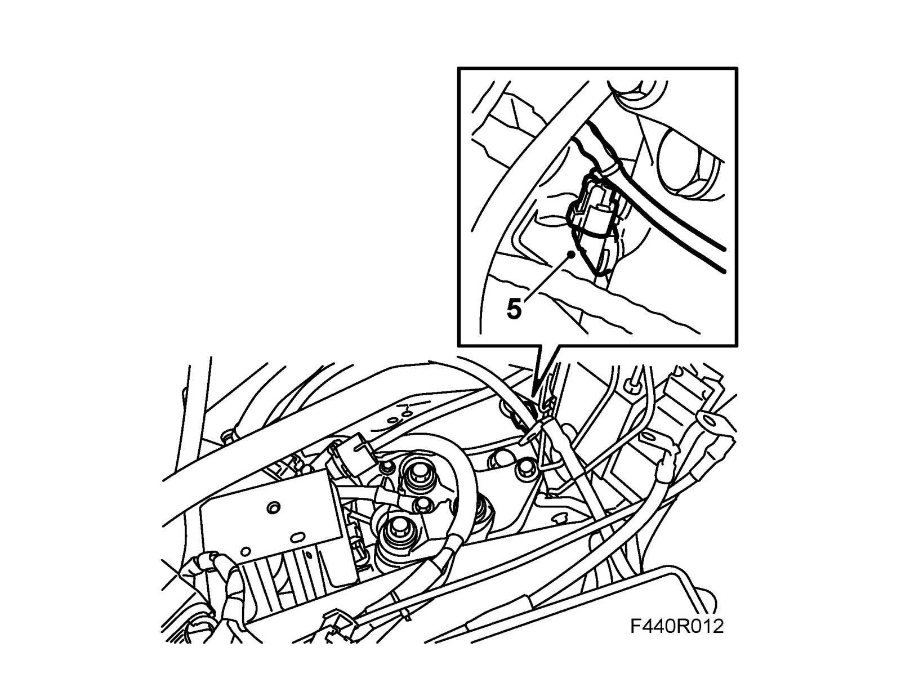
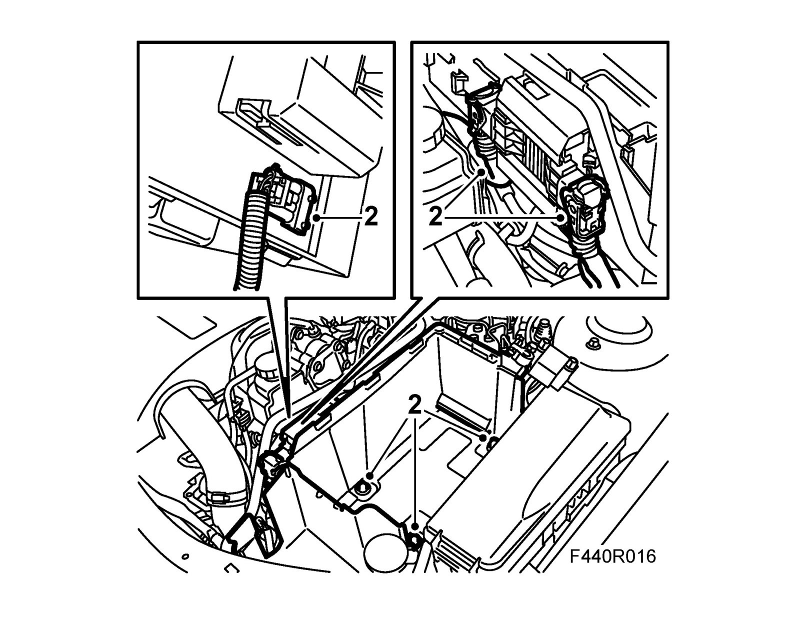
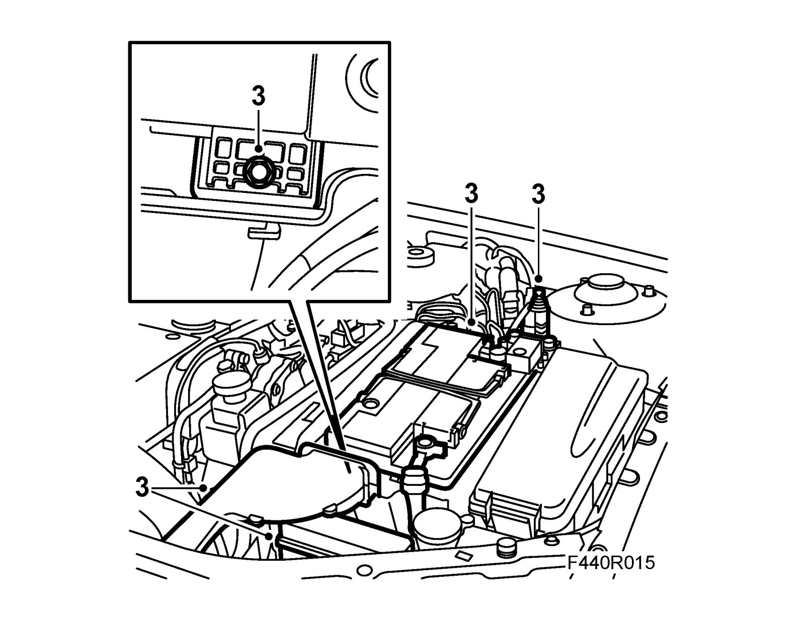

Output Shaft Speed Sensor
Output shaft speed sensorTo remove
1. Place covers over the wings to keep the paintwork clean and protect it from damage.
2. Remove the battery cover.
3. Remove the battery, coolant pipe, main fuse box and bonnet switch.

4. Unplug the control module connector. Unplug the connectors under the control module. Remove the battery tray.

5. Unplug the speed sensor connector. Remove the output shaft speed sensor.

To fit
1. Fit the speed sensor and plug in the connector.
2. Plug in the connectors under the control module. Plug in the control module connector and fit the battery tray.

3. Fit the bonnet switch, main fuse box and coolant pipe. Fit the battery.

4. Fit the battery cover.
5. Remove the wing covers.